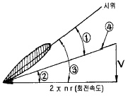
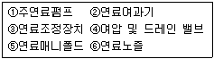
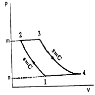
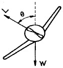
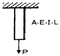
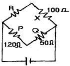

항공산업기사 (2006-09-10 기출문제)
1과목: 항공역학
1. 키놀이 운동을 위한 조종면은?
- 에어러론
- 엘리베이터
- 러더
- 스포일러
(정답률: 84%)

2. 고도 1,500M에서 M=0.7로 비행하는 항공기가 있다. 고도 12,000m에서 같은 속도로 비행할 때 Mach 수는?(단, 고도 1,500m에서 음속 a는 335m/s 이며, 고도 12,000m 에서 음속 a는 295m/s 이다.)
- 약0.3
- 약0.5
- 약0.8
- 약1.0
(정답률: 71%)
3. 글라이더가 고도 2,000m 상공에서 양항비 20인 상태로 활공한다면 도달할 수 있는 수평 활공거리는?
- 40,000
- 6,000
- 3,000
- 2,000
(정답률: 96%)
4. 프로펠러의 한 단면 그림에서 도면에 표시된 표시 내용이 맞는 것은?

- ①피치각
- ②받음각
- ③깃각
- ④전진속도
(정답률: 78%)
5. 이륙중량이 1,500kg, 엔진출력이 250HP인 비행기가 해면 고도를 80%의 출력으로 180km/h 순항비행 할 때 양항비는?
- 5.25
- 5.0
- 6.0
- 6.25
(정답률: 60%)
6. 압력중심에 가장 큰 영향을 끼치는 요소는 어느 것인가?
- 양력
- 받음각
- 항력
- 추력
(정답률: 88%)
7. 날개 밑에 장착되는 보틸론의 가장 큰 역할은?
- 가로안정 유지
- 딥 실속 방지
- 유도항력 감소
- 옆 미끄럼 방지
(정답률: 67%)
8. 헬리콥터는 자동회전을 행하기 위하여 프리휠 장치를 필요로 한다. 이 장치의 가장 중요한 역할은?
- 회전날개는 기관에 의해서 구동되나 회전날개가 기관을 구동시킬 수 없도록 하는 장치
- 회전날개는 기관에 의해 구동되며, 기관정지시 회전날개가 기관을 구동시킬 수 있도록 하는 장치
- 회전날개는 기관에 의해서 구동되나, 자전강하시 회전날개가 기관을 구동시킬 수 있는 장치
- 기관 정지시 회전날개의 회전력으로 비상장비를 작동시킬수 있게 만든 장치
(정답률: 54%)
9. 착륙거리를 짧게 하기 위한 고항력 장치가 아닌 것은?
- 지상 스포일러
- 역추진장치
- 드래그 슈트
- 경계층 제어장치
(정답률: 88%)
10. 비행기의 받음각이 외부적인 교란에 의해 진동을 시작 해서 점차적으로 진동이 감소하여 처음의 상태로 돌아갈 경우를 가장 올바르게 표현한 것은?
- 정적안정
- 동적안정
- 동적불안정
- 정적불안정
(정답률: 72%)
11. 유효피치를 설명한 것 중 틀린 것은?
- 공기 중에서 프로펠러가 1회전 할 때 실제 전진한 거리이다.
- V× (60/n) (V는 비행속도, n은 프로펠러 회전속도)로 표시할 수 있다.
- 일반적으로 기하학적 피치 보다 작다.
- r은 프로펠러 중심부터의 거리, β는 깃각 일 때 날개골은 2πr*tanβ의 유효피치를 가진다.
(정답률: 59%)
12. 관의 단면이 10cm2 인 곳에서 10m/s로 비압축성 유체가 흐르고 있다. 관의 단면이 25cm2 인 곳에서의 유체흐름 속도는?
- 3m/s
- 4m/s
- 5m/s
- 8m/s
(정답률: 78%)
13. 비행기의 도살핀을 사용하는 이유를 가장 올바르게 설명한 것은?
- 도살 핀은 롤링 모멘트를 적게 하여 비행기를 불안정하게 한다.
- 수직 꼬리날개가 실속하는 큰 옆미끄럼각에서도 방향안정을 유지 한다.
- 도살핀은 세로안정을 크게 한다.
- 도살핀은 플랩의 보조역할을 한다.
(정답률: 90%)
14. 동점성계수를 나타내는 것은?
- 점성계수/밀도
- 밀도/점성계수
- 관성력/점성력
- 점성력/중력
(정답률: 62%)
15. 헬리콥터 회전날개에 추력을 구하는 이론은?
- 회전면 상하 유동의 운동량 차이를 이용한 운동량 이론
- 로터 브레이드의 코닝각 변화 이론
- 엔진의 연소 소비율에 따른 연소 이론
- 로터 브레이드 회전관성을 이용한 관성 이론
(정답률: 66%)
16. 형상항력의 표현으로 가장 올바른 것은?
- 유도항력 + 조파항력
- 표면마찰항력 + 유도항력
- 간섭항력 + 조파항력
- 압력항력 + 표면마찰항력
(정답률: 71%)
17. 프로펠러 회전에 의해 깃이 허브 중심에서 밖으로 빠져나가려는 힘은?
- 추력
- 원심력
- 비틀림응력
- 구심력
(정답률: 86%)
18. NACA 23015에서 3 의 뜻을 가장 올바르게 표현한 것은?
- 최대 캠버의 크기가 시위의 3%
- 최대 캠버의 위치가 시위의 3%
- 최대 캠버의 위치가 시위의 15%
- 최대 두께의 위치가 시위의 15%
(정답률: 76%)
19. 다음 중에서 비행기의 세로 안정을 좋게 하기 위한 방법으로 가장 올바른 것은?
- 중심위치가 날개의 공력중심 전방에 위치할 수록 좋다.
- 중심위치가 날개의 공력중심 후방에 위치할 수록 좋다.
- 꼬리날개 부피계수 값이 작을 수록 좋다.
- 꼬리날개 효율이 작을 수록 좋다.
(정답률: 81%)
20. 프로펠러 비행기의 항속거리를 나타내는 식은? (단, R = 항속거리, B = 연료탑재량, V = 순항속도, P = 순항중의 기관의 출력, t = 항속시간, C = 마력당 1시간에 소비하는 연료량)
- R = V/t
- R = CP/VB
- R = VB/CP
- R = PB/CV
(정답률: 55%)
2과목: 항공기관
21. 공기를 빠른 속도로 분사시킴으로서 소형,경량으로 큰추력을 낼 수 있고 비행속도가 빠를수록 추진 효율이 좋고, 아음속에서 초음속에 걸쳐 우수한 성능을 가지는 엔진의 형식은?
- Turbojet Engine
- Turboshaft Engine
- Ramjet Engine
- Turboprop Engine
(정답률: 75%)
22. 방사형 엔진의 크랭크 축에서 정적평형은 어느 것에 의해 이루어지는가?
- dynamic damper
- counter weight
- dynamic suspension
- split master rod
(정답률: 75%)
23. 항공기의 엔진의 후화의 가장 큰 원인은?
- 빠른 점화시기
- 흡입 밸브의 고착
- 너무 희박한 혼합비
- 너무 농후한 혼합비
(정답률: 84%)
24. 왕복 기관의 고압 마그네토에 대한 설명 중 가장 관계가 먼 것은?
- 전기누설의 가능성이 많은 고공용 항공기에 적합한 점화계통이다.
- 고압 마그네토의 자기회로는 회전영구자석, 폴슈및 철심으로 구성되었다.
- 콘덴서는 브레이커 포인트와 병렬로 연결되어 있다.
- 1차 회로는 브레이커 포인트가 붙어 있을 때에만 폐회로를 형성한다.
(정답률: 69%)
25. 피스톤 엔진의 실린더 내의 최대 폭발 압력은 일반적으로 어느 점에서 일어나는가?
- 상사점
- 상사점 후 약 10° (크랭크각)
- 상사점 전 약 25° (크랭크각)
- 상사점 후 약 25° (크랭크각)
(정답률: 70%)
26. 가스터빈기관 연료계통의 기본적인 유로의 형성으로 가장 올바른 것은?

- ①②③④⑤⑥
- ①②③⑤④⑥
- ①③②④⑤⑥
- ①③②⑤④⑥
(정답률: 61%)
27. 실린더 내부의 가스가 피스톤에 작용한 동력은?
- 도시 마력
- 마찰마력
- 제동마력
- 축마력
(정답률: 39%)
28. 실린더의 내벽을 경화 시키는 방법은?
- nitriding
- shot peening
- Ni plating
- Zn plating
(정답률: 63%)
29. 프로펠러의 깃 각에 대해서 가장 올바르게 설명한 것은?
- 깃의 전 길이에 걸쳐 일정하다.
- 깃 뿌리에서 깃 끝으로 갈수록 작아진다.
- 깃 뿌리에서 깃 끝으로 갈수록 커진다.
- 일반적으로 프로펠러 중심에서 50% 되는 위치의 각도를 말한다.
(정답률: 84%)
30. 그림과 같은 브레이튼 사이클의 P - V 선도에 대한 설명 중 틀린 것은?

- 넓이 1 - 2 - 3 - 4 - 1은 사이클의 참 일
- 넓이 3 - 4 - n - m - 3은 터빈의 팽창일
- 넓이 1 - 2 - m - n - 1은 압축 일
- 1개씩의 정압과정과 단열과정이 있다.
(정답률: 71%)
31. 가스터빈기관이 정해진 회전수에서 정격 출력을 낼 수 있도록 연료조절장치와 각종 기구를 조정하는 작업을 무엇이라 하는가?
- 고장탐구
- 크래킹
- 트리밍
- 모터링
(정답률: 83%)
32. 실제 또는 상징적인 경계에 의하여 주위로부터 구분되는 공간의 일부를 무엇이라 하는가?
- 개방
- 밀폐
- 형태
- 계
(정답률: 86%)
33. 항공기 기관용 윤활유의 점도지수가 높다는 것은 무엇을 뜻하는가?
- 온도변화에 따른 윤활유의 점도 변화가 적다.
- 온도변화에 따른 윤활유의 점도 변화가 크다.
- 압력변화에 따른 윤활유의 점도 변화가 적다.
- 압력변화에 따른 윤활유의 점도 변화가 크다.
(정답률: 87%)
34. 항공기용 가스터빈 기관의 연소실 형식 중 정비 및 검사가 가장 편리한 형식은?
- 캔형
- 애눌러형
- 캔-애눌러형
- 반경류형
(정답률: 75%)
35. 속도 720km/h로 비행하는 항공기에 장착된 터보제트 기관이 196kg/s인 중량유량의 공기를 흡입하여 300m/s의 속도로 배기시킨다. 다음 중 진추력의 값을 나타낸것은?
- 2,000kg
- 4,000kg
- 6,000kg
- 8,000kg
(정답률: 47%)
36. 프로펠러 조속기 내의 스피더 스프링의 압축력을 증가하였다면 프로펠러 깃각과 엔진 RPM에는 어떤 변화가 있는가?
- 깃각은 증가하고, RPM은 감소한다.
- 깃각은 감소하고, RPM도 감소한다.
- 깃각은 증가하고, RPM도 증가한다.
- 깃각은 감소하고, RPM은 증가한다.
(정답률: 50%)
37. 다음 중 제트엔진 연료로 JP-3 을 구성하는 성분과 가장 거리가 먼 것은?
- 디젤유
- 케로신
- 항공유
- 하이드라진
(정답률: 56%)
38. 가스 터빈 기관의 열효율 향상 방법으로 가장 거리가 먼 내용은?
- 고온에서 견디는 터빈 재질 개발
- 기관의 내부 손실 방지
- 터빈 냉각 방법의 개선
- 배기 가스의 온도 증가
(정답률: 78%)
39. 열역학에서 가역과정이기 위한 조건으로 가장 올바른 것은?
- 마찰과 같은 요인이 있어도 상관 없다.
- 계와 주위가 항상 불균형 상태이어야 한다.
- 바깥 조건의 작은 변화에 의해서는 반대로 만들 수 없다.
- 과정이 일어난 후에도 처음과 같은 에너지 양을 갖는다.
(정답률: 85%)
40. 고출력 왕복기관에 사용되는 일종의 압축기로 혼합가스 또는 공기를 압축시켜 실린더로 보내어 큰 출력을 내도록 하는 것은?
- 기화기
- 공기덕트
- 매니폴드
- 과급기
(정답률: 79%)
3과목: 항공기체
41. 항공기의 무게중심이 기준선에서 90inch 에 있고, MAC의 앞전이 기준선에서 82inch 인 곳에 위치 한다. MAC 이 32inch인 경우 중심은 몃 %MAC 인가?
- 15
- 20
- 25
- 35
(정답률: 80%)
42. 항공기의 안전성을 보장 하기 위한 구조는?
- 페일-세이프 구조
- 샌드위치 구조
- 안전구조
- 세미-모노코크 구조
(정답률: 85%)
43. 수직안정판, 수평안정판, 승강키, 방향키, 등으로 구성된 항공기의 후방 동체부분을 무엇이라 하는가?
- after end assembly
- empennage
- fuselage
- bulkhead
(정답률: 66%)
44. 비행기의 표피재료인 알크래드판은 알루미늄 합금판 위에순 알루미늄을 피복한 것이다. 순 알루미늄울 피복한 주목적은?
- 단선배선에 있어서의 회로저항을 감소하기 위함
- 공기 중에 있어서의 부식을 방지하기 위함
- 표면을 매끈하게 하여 공기저항을 줄이기 위함
- 판의 두께를 증가하여 더 큰 하중에 견디도록 하기 위함
(정답률: 83%)
45. 그림과 같이 경사각 θ=60° 로서 정상선회의 비행을 하는 비행기의 날개에 걸리는 하중배수 n은 얼마인가?

- 0.5
- 1
- 2
- 4
(정답률: 74%)
46. 판금 작업을 할 때에 일반적으로 사용하는 전개도 작성방법으로 이루어진 것은?
- 평행선법, 삼각형법, 방사선법
- 평행선법, 삼각형법, 투상도법
- 삼각형법, 투상도법, 방사선법
- 평행선법, 투상도법, 사각형법
(정답률: 63%)
47. 안티스킷 장치의 가장 중요한 역할은?
- 항공기의 착륙 활주 중 활주속도에 비해 과도하게 제동을 함으로써 타이어가 미끄러지고 올바른 착륙주행이 이루어지지 않는 것을 방지 한다.
- 브레이크 제동을 원활하게 하기 위한 것이다.
- 유압식 브레이크에 장비되어 있는 작동유 누출을 방지하기 위한 것이다.
- 항공기가 미끄러지지 않게 균형을 유지시켜 준다.
(정답률: 80%)
48. 연강의 최대응력이 2.4× 106 kg/cm2 이고 사용응력이 1.2× 106 kg/cm2 일 때 안전여유는 얼마인가?
- 0.5
- 1
- 2
- 4
(정답률: 36%)
49. 조종 케이블이 작동 중에 최소의 마찰력으로 케이블과 접촉하여 직선운동을 하게 하며, 케이블의 3도 이내의 범위에서 방향을 유도하는 것은?
- 토크 튜브
- 벨 크랭크
- 폴리
- 페어리드
(정답률: 83%)
50. 쉐이크 프루프 고정와셔가 주로 사용되는 곳은?
- 주 구조물에 고정장치로 사용
- 높은 온도에 잘 견디고 심한 진동부분에 사용
- 스큐류를 자주 장탈하는 부분에 사용
- 와셔가 공기흐름에 노출되는 곳에 사용
(정답률: 59%)
51. 팜금 성형법의 접기가공에 대한 설명 중 가장 관계가 먼 내용은?
- 두께가 얇고 연한 재료는 예각으로 굴곡할 수 없다.
- 얇은 판이나 플레이트 등을 굴곡하는 것을 접기가공이라 한다.
- 굴곡반경이란 가공된 재료의 곡선상의 내측 반경을 말한다.
- 세트백은 굽힘 접선에서 성형점까지의 길이를 나타낸 것이다.
(정답률: 67%)
52. 그림과 같이 인장력 P를 받는 봉에 축적되는 탄성에너지에 대하여 잘못 설명한 것은?

- 봉의 길이 L에 비례한다.
- 봉의 단면적 A에 비례한다.
- 가한 하중 P의 제곱에 비례한다.
- 재료의 탄성계수의 E에 반비례한다.
(정답률: 57%)
53. 알루미늄합금 2024-T4의 열처리 기호 T4는 무엇을 나타내는가?
- 용액 열처리 후 냉간 가공품인 것
- 담금질 후 인공시효 경화한 것
- 가공경화 후 풀림처리를 한 것
- 담금질 후 상온시효가 완료된 것
(정답률: 63%)
54. 다음 중 모노코크형 동체의 구조 부재에 해당하지 않는것은?
- 벌크헤드
- 정형재
- 외피
- 세로대
(정답률: 61%)
55. 스포일러에 대한 설명 중 가장 거리가 먼 내용은?
- 대형 항공기에서는 날개 안쪽과 바깥쪽에 스포일러가 설치되어 있다.
- 비행 중 양쪽 날개의 공중 스포일러를 움직여서 비행속도를 감소시킨다.
- 착륙 활주 중에는 사용해서는 안된다.
- 비행 스포일러 혹은 지상 스포일러로 구분할 수 있다.
(정답률: 75%)
56. 다음 중 부식의 종류에 해당되지 않는 것은?
- 자장 부식
- 표면부식
- 입자간 부식
- 응력부식
(정답률: 88%)
57. NAS 654 V 10 D 볼트에 너트를 고정 하는 데 필요한 것은?
- 코터핀
- 스크류
- 락크와셔
- 특수와셔
(정답률: 67%)
58. 다음 항공기에 사용되는 복합재료의 하나인 탄소섬유에 관한 것이다. 가장 올바른 것은?
- 밀도는 보론이나 유리 섬유보다 크다.
- 열 팽창율이 매우 작아서 치수 안정성이 필요한 우주정비에 적합하다.
- 고온(500°C 이상)에서 사용시 탄화규소와 반응하여 산화 부식의 원인이 된다.
- 열 팽창율이 매우 크다.
(정답률: 63%)
59. 합금강 SAE 6150 의 1의 숫자는 무엇을 표시하는가?
- 1%의 크롬 함유량
- 0.1%의 탄소 함유량
- 1%의 니켈 함유량
- 1.0%의 망간 함유량
(정답률: 50%)
60. 리벳 머리에 표시를 보고 무엇을 알 수 있는가?
- 리벳 머리의 모양
- 리벳의 지름
- 재료의 종류
- 재료의 강도
(정답률: 73%)
4과목: 항공장비
61. 싱크로 계기가 아닌 것은?
- 오토신
- 자이로신
- 직류데신
- 마그네신
(정답률: 54%)
62. 선회계의 지시 방법에서 1 바늘폭이 90° /min의 선회 각 속도를 뜻하고, 2 바늘폭이 180° /min의 선회 각속도를 뜻하는 지시방법은?
- 1분계
- 2분계
- 3분계
- 4분계
(정답률: 52%)
63. 미국 도선규격으로 채택된 도선규격은?
- AM 도선 규격
- AS 도선 규격
- BS 도선 규격
- DIN 도선 규격
(정답률: 48%)
64. 항공기에 사용되는 교류는 400Hz 이다. 8,000rpm으로 구동되는 교류발전기는 몇 극이어야 하는가?
- 2극
- 4극
- 6극
- 8극
(정답률: 72%)
65. 대형 항공기에서 주로 엔진출구의 온도를 측정하는데 가장 적합한 과열 탐지기는?
- 열스위치식 탐지기
- 서머커플형 탐지기
- 튜브형 탐지기
- 가변저항식 탐지기
(정답률: 66%)
66. 수평의는 항공기에서 어떤 축의 자세를 감지하는가?
- 기수 방위
- 롤 및 피치
- 롤 및 기수 방위
- 피치, 롤 및 기수방위
(정답률: 71%)
67. 전원회로에서 전압계 VM 와 전류계 PM 를 부하와 연결하는 방법으로 옳은 것은?
- VM는 병렬, AM는 직렬
- VM는 직렬, AM는 병렬
- VM와 AM을 직렬
- VM와 AM을 병렬
(정답률: 75%)
68. 항공기 유압계통에 사용되는 파이프의 크기 표시로 가장 올바른 것은?
- 외경은 인친의 소수, 두께는 인치의 분수로 표시한다.
- 외경은 인친의 분수, 두께는 인치의 소수로 표시한다.
- 외경, 두께 모두를 인치의 소수로 표시한다.
- 외경, 두께 모두를 인치의 분수로 표시한다.
(정답률: 62%)
69. 공 ㆍ 유압 계통에서 공압과 유압을 필요에 따라 선택할때에 사용되는 밸브는?
- 감압밸브
- 셔틀밸브
- 유압관 분리밸브
- 선택밸브
(정답률: 31%)
70. 화재의 등급에서 마그네슘과 분말금속 등에 의한 금속화재는 어느 등급으로 분류되는가?
- A
- B
- C
- D
(정답률: 78%)
71. 해면상에서부터 항공기까지의 고도로 가장 올바른 것은?
- 절대고도
- 진고도
- 밀도고도
- 기압고도
(정답률: 59%)
72. 다음 구성품 중 관성항법 장치와 가장 관계가 가장 먼 것은?
- 속도계
- 가속도계
- 자이로를 이용한 안정판
- 컴퓨터
(정답률: 39%)
73. 고정된 부분에서 유체의 유출방지 및 공기나 먼지의 유입을 방지하는 시일은?
- 와셔
- 와이퍼
- 패킹
- 가스켓
(정답률: 56%)
74. 브리지 회로에서 ud형이 취하여 졌다. 저항 R의 값은?

- 60Ω
- 80Ω
- 120Ω
- 240Ω
(정답률: 75%)
75. 14,000ft 미만에서 비행할 경우 사용하고, 비행도중 관제탑 등에서 보내준 기압정보에 따라서 기압셋트를 수정하면서 고도 setting을 하는 방법은?
- QNH
- QNE
- QFE
- QFG
(정답률: 65%)
76. 서비스 통화 계통에 대한 설명으로 가장 올바른 것은?
- 비행 중에는 조종실과 객실 승무원 및 주방간 통화
- Flight를 위하여 조종사와 지상조업 요원간 직접통화
- 정비사 상호간 통화
- 조종사 상호간의 통화
(정답률: 69%)
77. 액량계기의 형식과 가장 거리가 먼 것은?
- 직독식 액량계
- 부자식 액량계
- 차압식 액량계
- 전기용량식 액량계
(정답률: 41%)
78. 궤도조건과 배치방식에 따른 위성통신방식과 가장 거리가 먼 것은?
- 랜덤 위성 방식
- 정지 위성 방식
- 위성 궤도 방식
- 위상 위성 방식
(정답률: 34%)
79. 산소계통에서 고압의 산소를 저압으로 낮추는데 사용하는 부품은?
- Pressure reduce valve
- Pressure relief valve
- 고정된 Calibrated Orifice
- Diluter-demand regulator
(정답률: 59%)
80. 직류를 교류로 변환시키는 장치는?
- 인버터
- 콘버터
- DC 발전기
- 바이브레이터
(정답률: 89%)